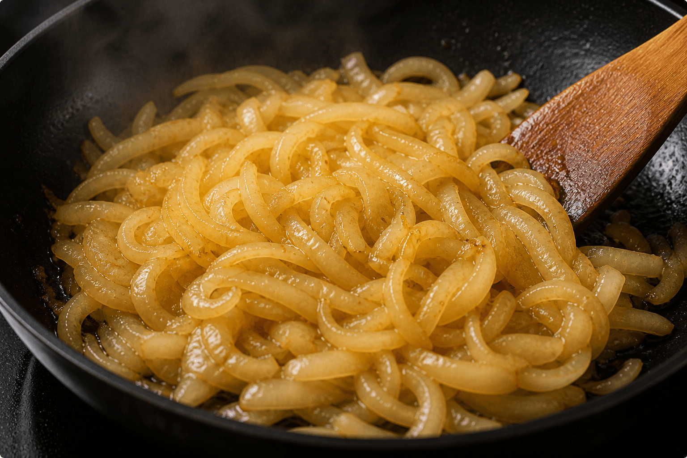
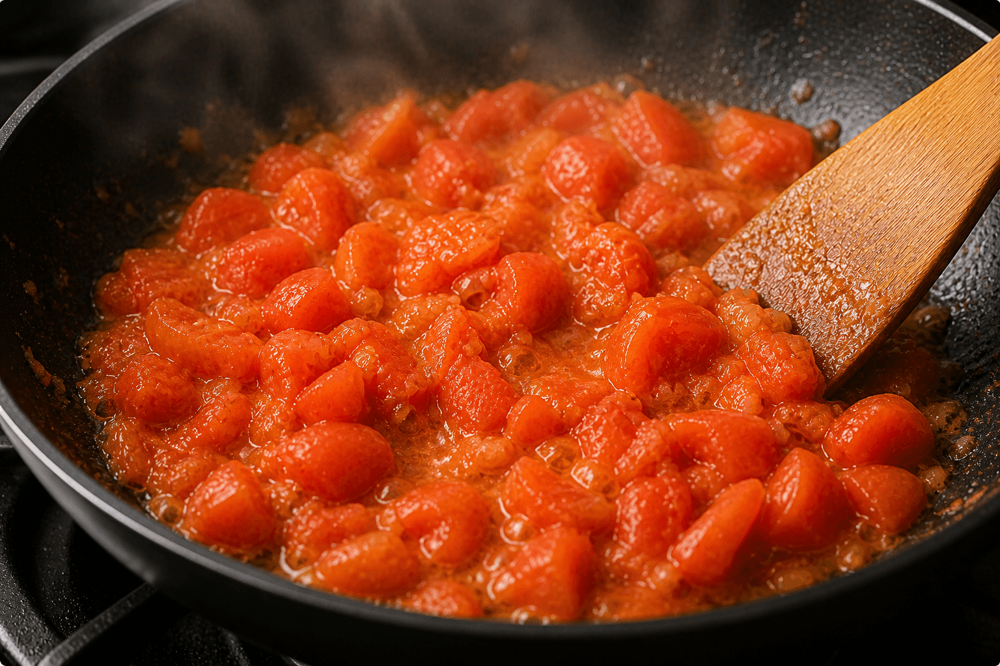
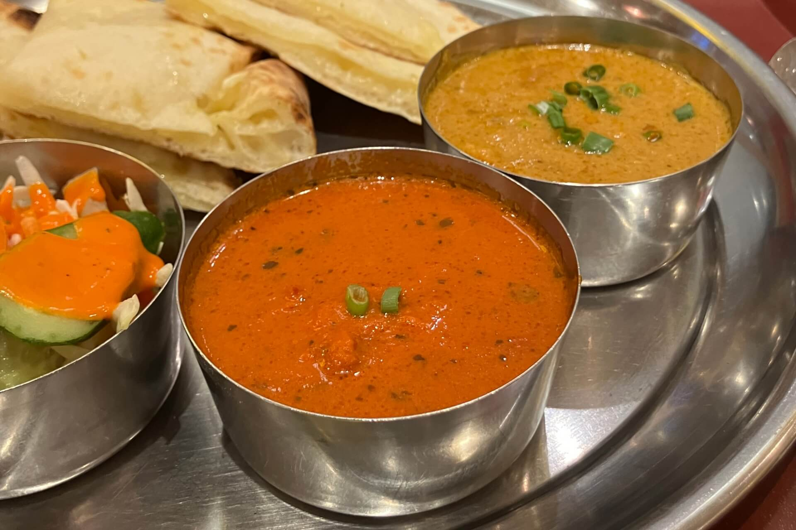
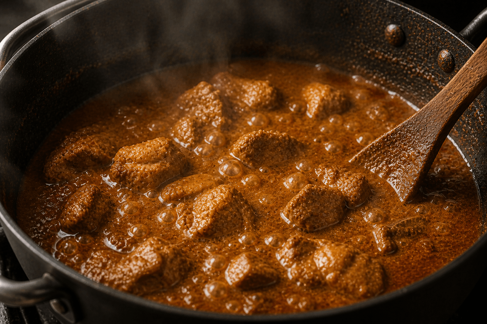

北海道・長野県・兵庫県など
その時期に最も状態の良い
産地のものを選んでいます。

こだわり
Quality

VEGETABLE
野菜
カレーの土台となる、玉ねぎとトマト。
シンプルだからこそ、素材の質がそのまま味に表れます。
産地や季節を見極めて仕入、素材本来の力を引き出すことを大切にしています。
ONION
甘味とコクは産地から。
玉ねぎは、季節ごとに産地を見極めて仕入れています。
水分量や糖度の違いが、仕上がりに大きく影響するためです。
じっくり火を入れ、余分な水分を飛ばしながら
自然な甘味とコクを引き出す。
飴色にし過ぎず、重くなり過ぎないように。
毎日食べられる軽さを意識しています。

主な産地
北海道・長野県・兵庫県など
その時期に最も状態の良い
産地のものを選んでいます。
特徴
甘味が強く、えぐみが少ない
加熱したときの、コクが豊か
水分量のバランスがいい
TOMATO
酸味と旨味のバランスを見極める。
トマトもまた、産地や季節によって表情が変わります。
酸味が強いもの、甘味があるもの。
その違いを見極めながら、
加えるタイミングと火入れを調製しています。
フレッシュさを残すのが、コクへと変えるのか。
一皿ごとに、最適なバランスをつくります。

主な産地
長野県・熊本県・愛知県など
旬の時期に合わせて、
酸味・甘味のバランスが
良いものを選定しています。
特徴
完熟で旨味が濃い
酸味と甘みのバランスが良い
加熱後も風味がしっかり残る

MEAT
肉
ただ加えるのではなく、火入れやカットによって味の出方をコントロールしています。
素材としてではなく、一皿のバランスを構成する要素として扱う。
産地や季節を見極めて仕入、素材本来の力を引き出すことを大切にしています。
MEAT
旨味は、引き出すもの。
肉は、加熱の仕方で大きく変わります。
強火で香ばしさを出すのか、
じっくり火を入れて柔らかさを引き出すのか。
スパイスとの相性を見ながら、
最適な状態に仕上げています。

主なお肉
鶏肉・豚肉など
(用途によって使い分け)
特徴
旨味を引き出す火入れ
スパイスとの相性を考慮
重くなりすぎない仕上がり

GARAM MASALA
ガラムマサラ
ガラムマサラは、複数のスパイスを重ねたブレンド。
料理の“最後”に加えることで、香りを立ち上げます。
主張しすぎず、全体をまとめながら奥行きをつくる。
一皿の印象を決める、仕上げのスパイスです。
GARAM MASALA
一皿の印象を決める
同じガラムマサラでも、配合により表情は変わります。
温かみのある香り、ほんのり甘さを感じるニュアンス。
その一皿に合わせて、バランスを見極めながら使っています。
“強さ”ではなく、“余韻”を残すために。

主な構成スパイス
カルダモン・クローブ・シナモンなど
役割
仕上げに香りづけ
全体の一体感をだす
食後に残る余韻をつくる